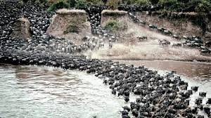
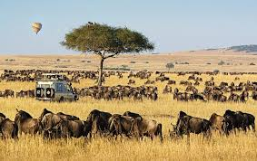

Witness the world's greatest wildlife spectacle - over 2 million animals on their annual journey across the Serengeti-Mara ecosystem

Witness the dramatic river crossings at the Mara River. Thousands of wildebeest and zebras brave crocodile-infested waters in their quest for fresh grazing.

Experience the miracle of birth as thousands of wildebeest calves are born daily. Predators are most active during this vulnerable period.
Follow the herds as they graze on the nutrient-rich southern plains. Perfect for game drives and witnessing the vast herds.
Experience the migration as herds move westward. Excellent for predator sightings and witnessing the Grumeti River crossings.
Prime location for witnessing the migration before the river crossings. Less crowded with excellent game viewing opportunities.
Combine migration viewing with the world's largest caldera. Year-round resident wildlife with seasonal migration visitors.
Peak migration season (July-October) requires booking 6-12 months in advance
Essential for spotting distant herds and following river crossing action
Bring telephoto lenses (200mm+) for capturing distant wildlife action
Best wildlife viewing is at dawn - start game drives before sunrise